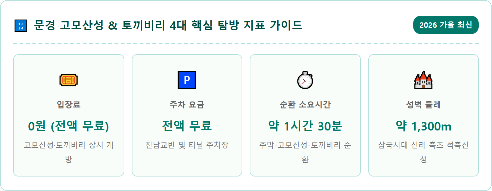
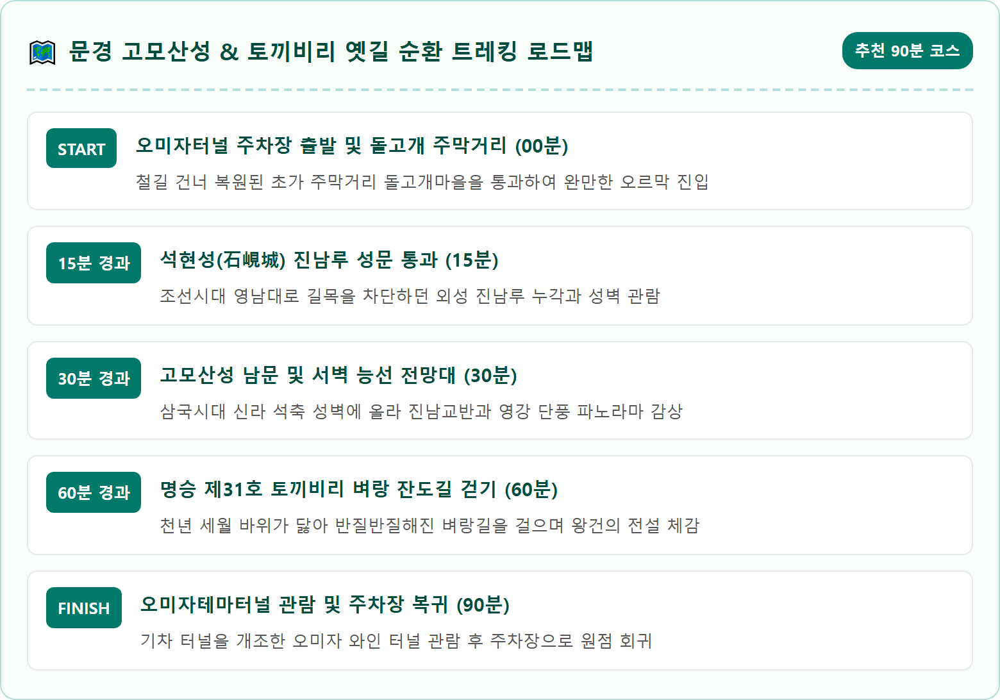
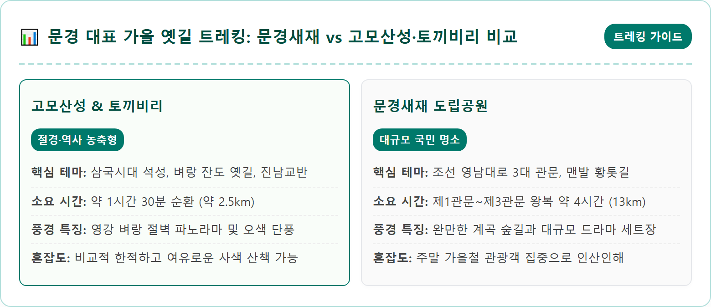
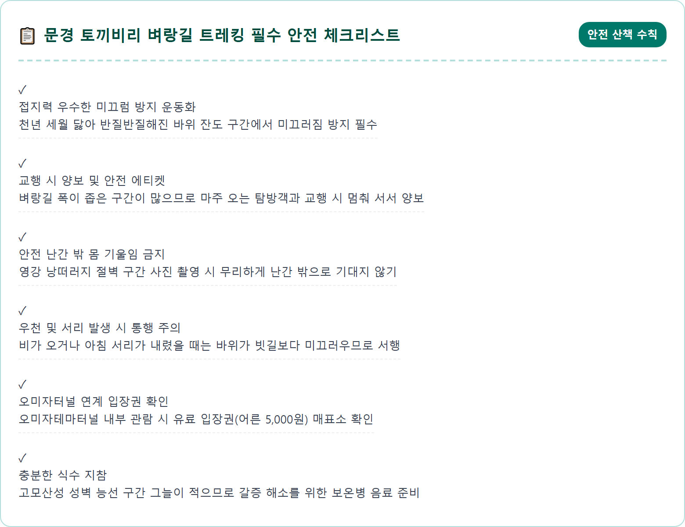
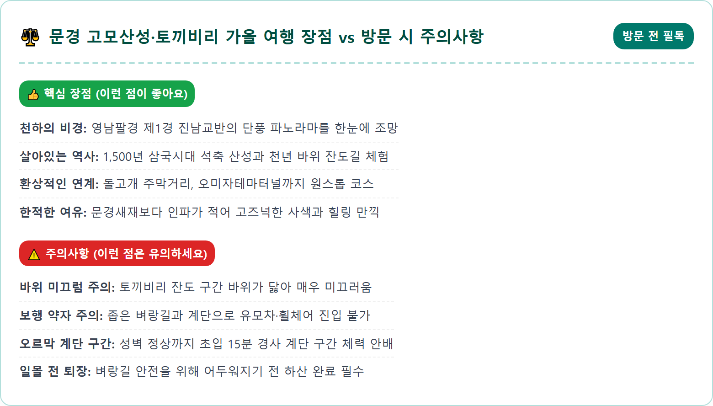
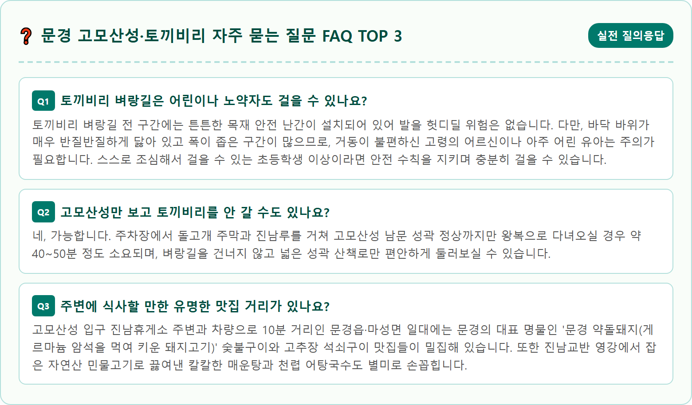

An awe-inspiring autumn landscape of Gomo Mountain Fortress (Gomosanseong) and Tokkibiri cliff trail in Mungyeong, South Korea. Ancient stone fortress walls wind gracefully along a mountain ridge overlooking the magnificent Jinnamgyoban gorge and the winding Yeonggang river. Rich autumn foliage in crimson, burnt orange, and golden yellow blankets the cliffs and riverbanks. The historic stone gate of Jinnamru and an ancient narrow cliffside path carved into solid rock are visible. Soft afternoon golden light illuminates the scene, photorealistic, 8k resolution, cinematic composition, breathtaking natural perspective.

경상북도 문경시 마성면 신현리에 위치한 진남교반(鎭南橋畔)은 깎아지른 기암괴석과 굽이쳐 흐르는 영강(潁江)의 맑은 물줄기, 그리고 이를 가로지르는 철교와 교량들이 어우러져 일찍이 '영남팔경(嶺南八景) 중 제1경'으로 손꼽혀온 천하의 절경입니다. 봄철 진달래와 철쭉, 여름철 푸른 녹음에 이어 늦가을 11월이 찾아오면 영강을 둘러싼 거대한 암벽 협곡 전체가 붉고 노란 만추의 단풍 옷으로 갈아입으며 보는 이들의 탄성을 자아냅니다.
이 빼어난 자연 요새의 산봉우리를 감싸 안고 우뚝 솟아 있는 유적이 바로 국가 사적 제564호로 지정된 '문경 고모산성(姑母山城)'입니다. 고모산성은 서기 5세기경 신라가 소백산맥을 넘어 고구려와 백제를 견제하고 한강 유역으로 진출하기 위해 축조한 포곡식 석축 산성으로, 성벽 둘레만 약 1,300m에 이릅니다. 서쪽으로는 수직에 가까운 바위 절벽이 천연 방어벽을 이루고 있어 예로부터 '한 사람이 길목을 지키면 만 사람이 지나가지 못한다'는 일당백의 군사적 요충지였습니다.
성벽 능선에 올라서면 발아래로 진남교반의 숨 막히는 가을 파노라마와 영남대로의 옛길이 시원하게 펼쳐집니다. 고모산성은 문경새재(조령)의 유명세에 가려 상대적으로 덜 알려져 있었으나, 최근 성곽 복원과 둘레길 정비가 완벽하게 마무리되면서 한적하고 호젓하게 가을의 깊은 서정을 누리고자 하는 여행객들에게 최고의 힐링 명소로 급부상하고 있습니다.
문경 고모산성과 토끼비리를 탐방할 때 차량을 주차할 수 있는 공식 거점은 두 곳이 있습니다. 첫 번째는 국도 3호선 진남휴게소 맞은편에 위치한 '진남교반 공영주차장'이며, 두 번째는 고모산성 바로 아래 철길 옆에 자리한 '문경오미자테마터널 전용 주차장'입니다. 두 주차장 모두 주차 요금이 연중 전액 무료로 운영되고 있어 시간 구애 없이 편안하게 탐방을 즐길 수 있습니다.
걷는 거리를 최소화하고 고모산성과 토끼비리, 그리고 오미자터널을 원스톱으로 둘러보고 싶다면 '문경오미자테마터널 주차장'에 주차하는 것이 가장 효율적입니다. 주차장에서 차를 대고 기찻길을 건너면 불과 2~3분 만에 돌고개 주막거리와 석현성 진남루 입구에 도달할 수 있습니다. 공간도 약 100대 이상 주차가 가능하여 평일은 물론 주말 오전에도 쾌적하게 이용할 수 있습니다.
만약 단풍 피크 시간대에 오미자터널 주차장이 붐빌 경우, 다리 건너편 진남휴게소 공영주차장에 주차한 뒤 영강을 가로지르는 진남교 보행로를 따라 약 7~8분 정도 가을 강바람을 쐬며 걸어오셔도 좋습니다. 진남교 위에서 바라보는 진남교반 암벽 단풍의 각도 또한 절경이므로 이 또한 훌륭한 산책의 일부가 됩니다.

주차장에서 산길로 접어들면 가장 먼저 마주하는 정겨운 풍경이 바로 초가지붕이 옹기종기 모여 있는 '돌고개 주막거리'입니다. 조선시대 한양으로 통하던 영남대로는 동래(부산)에서 출발해 대구, 상주, 문경을 거쳐 충주를 지나 한양으로 이어졌는데, 험준한 문경새재를 넘기 직전 영강을 건너 마지막으로 여장을 풀고 목을 축이던 곳이 바로 이 돌고개 주막이었습니다.
현재 이곳에는 옛 나그네들이 탁주 한 사발과 국밥을 들이켜던 전통 주막 건물과 헛간, 평상이 아기자기하게 복원되어 있습니다. 가을철이면 주막집 처마 밑에 매달린 옥수수와 감나무의 주홍빛 감들이 어우러져 타임머신을 타고 조선시대로 시간 여행을 떠나온 듯한 아늑함을 선사합니다. 주막거리 옆 흙길을 따라 조금 더 오르면 웅장한 조선시대 석축 성곽인 '석현성(石峴城)'과 당당한 누각을 자랑하는 '진남루(鎭南樓)'가 길을 가로막아 섭니다.
석현성은 1596년 임진왜란 당시 왜군의 재침략을 방어하기 위해 고모산성 익성(翼城) 형태로 쌓은 관문 성곽입니다. 거대한 무지개 모양의 홍예문(虹霓門)을 통과해 성루 안쪽으로 들어서면, 천년 요새 고모산성의 본성벽으로 이어지는 가파른 성곽길이 눈앞에 시원하게 펼쳐집니다.
진남루를 지나 고모산성 남문 성곽길을 따라 능선 위로 올라서면, 그동안 나무에 가려져 있던 시야가 한순간에 360도로 터지며 가슴이 벅차오르는 감동을 맛보게 됩니다. 복원된 백색 화강암 성벽이 마치 거대한 용이 산등성이를 타고 꿈틀거리며 올라가는 듯 유려한 곡선을 그리며 산봉우리를 휘감고 있습니다.
성벽 위 서벽 전망 데크에 서면, 깎아지른 절벽 아래로 푸른 영강이 굽이쳐 흐르고 그 너머로 오정산과 어룡산의 거대한 산줄기가 울긋불긋한 가을 단풍으로 뒤덮여 장관을 이룹니다. 기암절벽 사이로 철도 교량과 옛 국도 다리가 겹쳐 지나가는 진남교반의 입체적인 풍광은 오직 이곳 고모산성 정상에서만 감상할 수 있는 독보적인 뷰포인트입니다.
성곽 능선길은 좌우로 안전 로프와 데크가 설치되어 있어 안전하게 거닐 수 있으며, 바위 틈새마다 자라난 억새 풀들이 만추의 가을바람에 은빛으로 일렁입니다. 성벽 돌 틈 사이에 걸터앉아 유유히 흐르는 강물을 내려다보고 있으면 천년 전 삼국시대 병사들이 조국의 국경을 지키기 위해 밤낮으로 경계를 섰던 그날의 역사가 눈앞에 생생하게 그려집니다.

고모산성 남문에서 석현성 바깥쪽 계곡으로 이어지는 숲길로 내려서면, 우리나라 옛길의 정수로 꼽히는 국가 명승 제31호 '문경 토끼비리'로 접어들게 됩니다. '비리'란 벼랑의 경상도 사투리로, 토끼비리는 영강의 깎아지른 수직 바위 절벽을 정으로 쪼아 벼랑 허리에 간신히 한 사람이 지나갈 수 있도록 개척한 천년의 벼랑 잔도(棧道)입니다.
이 길에는 서기 927년 고려 태조 왕건에 얽힌 흥미진진한 설화가 전해집니다. 후삼국 통일 전쟁 당시 왕건이 남쪽으로 군사를 이끌고 진군하던 중, 영강 벼랑에 가로막혀 더 이상 나아가지 못하고 고립될 위기에 처했습니다. 그때 마침 벼랑가에서 토끼 한 마리가 벼랑을 타고 숲속으로 잽싸게 달아나는 것을 본 왕건은 "토끼가 가는 길이라면 사람도 갈 수 있다"며 토끼가 지나간 바위 틈을 깎아 길을 내어 군사를 무사히 진군시켰다고 하여 '토끼비리(관갑천 잔도)'라는 이름이 붙게 되었습니다.
절벽 허리를 따라 이어지는 토끼비리 길에 들어서면 왼쪽으로는 손을 뻗으면 닿을 듯한 수직 암벽이 솟아 있고, 오른쪽으로는 천 길 낭떠러지 아래로 영강의 푸른 물결이 넘실댑니다. 벼랑길에는 안전 목재 난간이 견고하게 설치되어 있어 발을 헛디딜 염려 없이 안전하게 천년 전의 스릴 넘치는 잔도 트레킹을 즐길 수 있습니다.
토끼비리를 걸을 때 가장 경이로운 경험은 바로 발밑의 바위 표면을 관찰하는 순간입니다. 단단하기로 유명한 규암 재질의 바위 바닥이 마치 대리석을 기계로 연마해 놓은 것처럼 반질반질하게 윤이 나 있고, 수많은 발자국이 스쳐 지나가며 움푹 파여 있는 모습을 직접 확인할 수 있습니다.
조선 500년 동안 영남 지방의 수많은 선비들이 괴나리봇짐을 짊어지고 한양 과거 시험장을 향해 걸어갔던 유일한 통로가 바로 이 토끼비리였습니다. 추풍령을 넘으면 낙방하고(가을바람에 낙엽 지듯 떨어진다), 죽령을 넘으면 죽을 쑨다는 속설 때문에 전국의 과거 응시생들은 '기쁜 소식을 듣는 문'이라는 뜻을 지닌 문경(聞慶)의 이 벼랑길을 반드시 지나갔습니다.
합격을 염원하던 수십만 선비들의 짚신 발자국과 나그네들의 신산한 세월이 천년 동안 쌓이고 닳아 거대한 바위를 거울처럼 매끄럽게 깎아낸 것입니다. 손으로 반들반질한 바위 표면을 만져보며 그 길을 걸어가면, 시대를 뛰어넘어 꿈을 향해 묵묵히 걸어갔던 옛사람들의 뜨거운 열정과 간절한 염원이 가슴 깊은 곳으로 고스란히 전해져 옵니다.

고모산성과 토끼비리 탐방을 마치고 산을 내려오면, 주차장 바로 옆에 위치한 이색 명소인 '문경오미자테마터널'을 함께 둘러보는 코스가 제격입니다. 문경오미자테마터널은 1954년 석탄과 승객을 수송하기 위해 개통되었다가 1990년 문경선 철도 운행 중단으로 방치되었던 길이 540m의 옛 석현터널을 리모델링하여 조성한 복합 문화 공간입니다.
터널 내부는 연중 14~17도의 일정한 온도가 유지되어 늦가을 쌀쌀해진 몸을 녹이기에 안성맞춤입니다. 터널 안으로 들어서면 화려한 LED 조명 예술과 트릭아트 포토존, 그리고 문경의 대표 특산물인 오미자 와인과 오미자 젤리, 오미자 청 등을 시음하고 구매할 수 있는 와인 바가 마련되어 있습니다. 오미자 와인 한 잔을 곁들이며 몽환적인 빛의 터널을 걷는 재미가 쏠쏠합니다.
시간적 여유가 더 있다면 터널 앞 철길을 따라 영강 수변 데크 산책로를 걸어보세요. 강변 억새와 강물에 비친 진남교반의 기암절벽을 가장 낮은 눈높이에서 올려다볼 수 있어, 고모산성 정상에서 내려다보던 조망과는 또 다른 웅장한 가을 강변의 입체적인 매력을 만끽할 수 있습니다.
문경 고모산성과 토끼비리는 험준한 산악 지형을 끼고 있는 코스이므로 안전에 대한 각별한 주의가 요구됩니다. 특히 토끼비리 벼랑 잔도 구간은 바위 자체가 오랜 세월 닳아 표면 마찰력이 일반 등산로보다 훨씬 적습니다. 바닥창이 닳은 낡은 운동화나 슬리퍼, 굽이 있는 신발을 신을 경우 순간적으로 미끄러져 부상을 입을 위험이 매우 높습니다.
따라서 접지력이 우수한 트레킹화나 등산화를 필히 착용해야 하며, 벼랑길을 걸을 때는 장난을 치거나 한눈을 팔지 말고 발밑 바위를 확인하며 한 걸음씩 침착하게 내디뎌야 합니다. 벼랑길 폭이 1m 내외로 좁아지는 구간에서는 마주 오는 사람이 지나갈 수 있도록 안전한 넓은 쉼터 바위 쪽에서 잠시 멈추어 양보하는 미덕이 필요합니다.
또한 고모산성 성벽 능선 구간은 사방에서 가을바람이 매섭게 불어오므로 체온 유지를 위해 바람막이 겉옷과 얇은 스카프를 준비하시기 바랍니다. 늦가을에는 일몰이 매우 빠르므로 가급적 오후 4시 이전에는 토끼비리 벼랑 구간을 빠져나와 주차장으로 안전하게 이동하시는 일정을 강력히 권장합니다.

경북 문경 고모산성과 토끼비리는 자연의 수려함과 역사의 무게감이 완벽하게 녹아든 보석 같은 가을 여행지입니다. 진남교반의 기암절벽을 수놓은 오색 단풍과 그 아래를 굽이쳐 흐르는 영강의 맑은 물줄기는 도시의 각박한 일상 속에서 지쳐 있던 마음에 깊은 위로와 활력을 불어넣어 줍니다.
삼국시대 병사들의 숨결이 깃든 웅장한 고모산성 성벽을 거닐고, 천년 전 옛 선비들의 간절한 꿈이 바위마다 새겨진 토끼비리 벼랑길을 한 걸음 한 걸음 디디며 걷는 시간은 단순한 풍경 감상을 넘어 삶을 되돌아보는 깊은 사색의 여정이 됩니다. 여기에 돌고개 주막거리의 옛 정취와 오미자테마터널의 달콤한 향기까지 더해진 1시간 30분의 동선은 문경이 선사하는 가장 알차고 밀도 높은 늦가을 선물입니다.
인파로 북적이는 유명 단풍 명소를 벗어나, 맑은 공기와 천년의 옛길을 오롯이 누리고 싶다면 이번 주말 문경 고모산성과 토끼비리로 떠나보세요. 벼랑 끝에서 마주하는 진남교반의 가을 절경과 바위 위에 새겨진 천년의 발자국이 오래도록 잊히지 않는 깊은 감동으로 기억될 것입니다.
